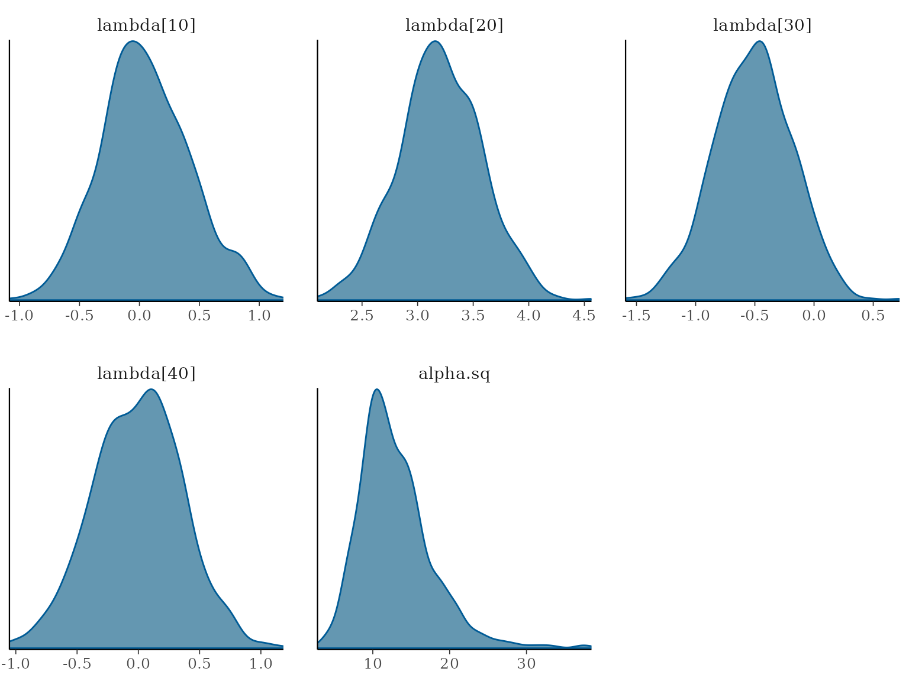

speedyBBT is a package for Bayesian Bradley-Terry
modelling. It provides functions for fitting the Bradley-Terry model
using Markov Chain Monte Carlo (MCMC) methods, allowing for inference on
item abilities and hyperparameters. It uses latent Polya-Gamma variables
to facilitate efficient sampling.
To fit a Bradley-Terry model using speedyBBT, you can
first install the package from CRAN or install the development version
from GitHub.
# Install from CRAN
# install.packages("speedyBBT")
# Install the development version from GitHub
# remotes::install_github("rowlandseymour/speedyBBT")You can learn more about the package functions and how to use them
from the documentation which can be accessed using
?function_name in R. For example, to learn about the
speedyBBTm function, you can run:
?speedyBBTmThe package includes some example datasets that you can use to
practice fitting models. These datasets are automatically loaded when
you install the package. To view the forcedMarriage
dataset, you can run:
data("forcedMarriage")This dataset was collected from 12 judges in Nottinghamshire who were asked to judge which of a pair of 76 wards had a higher risk of forced marriage. The dataset contains the results of the 1,846 pairwise comparisons made by the judges. An adjacency matrix is constructed based on proximity, assuming that geographically close wards are more highly correlated. This serves as a covariance matrix for the multivariate normal prior distribution of the item qualities. In this case, the “items” are wards in Nottinghamshire and their “quality” is the risk of forced marriage in that ward.
The speedyBBTm function can be used to fit a
Bradley-Terry model to the data. You can specify the outcome variable,
the items involved in each comparison, and any prior information you
have about the items’ quality. The function will return an MCMC object
containing samples from the posterior distribution of the item
qualities. For this example, you can use the adjacency matrix provided
with the package data and then use it to create a covariance matrix for
the prior distribution of the item qualities. For your own data set, you
will want to create an adjacency matrix with values that denote the
similarity of different items to one another. For this example, the
adjacency matrix ranks wards that are closer to one another as more
similar.
# Construct covariance matrix
expA <- expm::expm(forcedMarriage$adjacencyMatrix)
prior.var <- diag(diag(expA)^-0.5) %*% expA %*% diag(diag(expA)^-0.5)Next, you can fit the model using the speedyBBTm()
function. You will need to specify the outcome variable, the items
involved in each comparison, and the prior covariance matrix for the
item qualities. You can also specify the number of MCMC iterations to
run. This example uses the default values for the hyperparameters of the
prior distribution, but you can also specify your own values if you have
prior knowledge about the items’ rating using the
hyperparameter argument. To match the plots in this
vignette, you will need to use the same argument to
set.seed as the one provided here.
# Fit model
set.seed(432)
forcedMarriageModel <- speedyBBTm(
outcome = rep(1, length(forcedMarriage$comparisons$win)),
item1 = forcedMarriage$comparisons$win,
item2 = forcedMarriage$comparisons$lost,
item.prior.var = prior.var,
n.iter = 10000,
burn.in = 100
)To view some preliminary information about the results, you can calculate the means of the item quality parameters from the MCMC samples and summarise them. This will give you an idea of the estimated qualities of the items based on the comparisons in the dataset.
forcedMarriageModelMeans <- colMeans(forcedMarriageModel[, grep("lambda", varnames(forcedMarriageModel))])
forcedMarriageModelMeans
#> lambda[1] lambda[2] lambda[3] lambda[4] lambda[5] lambda[6]
#> 4.52915393 1.89396353 2.66660768 2.17305719 3.90360448 3.64249117
#> lambda[7] lambda[8] lambda[9] lambda[10] lambda[11] lambda[12]
#> 3.36582025 4.09714837 -0.06397722 0.03890927 1.68941936 1.54784848
#> lambda[13] lambda[14] lambda[15] lambda[16] lambda[17] lambda[18]
#> 0.81951014 0.18418959 1.99405825 -0.03220508 -0.65259548 2.14829535
#> lambda[19] lambda[20] lambda[21] lambda[22] lambda[23] lambda[24]
#> 2.86342118 3.21667237 1.61565479 2.27106008 0.02456295 2.05816610
#> lambda[25] lambda[26] lambda[27] lambda[28] lambda[29] lambda[30]
#> 3.97978119 2.12469063 3.23364626 -0.05615048 -1.24454682 -0.53341111
#> lambda[31] lambda[32] lambda[33] lambda[34] lambda[35] lambda[36]
#> -0.84609241 3.72850402 0.78135481 0.41609900 0.80915730 0.87679933
#> lambda[37] lambda[38] lambda[39] lambda[40] lambda[41] lambda[42]
#> 2.50501412 -0.52006768 0.23697345 -0.04173245 2.81085394 2.43522496
#> lambda[43] lambda[44] lambda[45] lambda[46] lambda[47] lambda[48]
#> 2.23940232 3.54003026 3.14390067 -2.54853194 -1.96840468 -3.06091214
#> lambda[49] lambda[50] lambda[51] lambda[52] lambda[53] lambda[54]
#> -2.14535591 1.84323125 -1.63680253 -1.82140425 -1.57653231 -2.03511914
#> lambda[55] lambda[56] lambda[57] lambda[58] lambda[59] lambda[60]
#> 1.85534836 -2.92146260 -2.02843989 -1.75648117 -3.64368587 -3.48899177
#> lambda[61] lambda[62] lambda[63] lambda[64] lambda[65] lambda[66]
#> -1.93710149 -2.59451640 -2.93465911 -2.84709656 -3.67559024 -3.90459081
#> lambda[67] lambda[68] lambda[69] lambda[70] lambda[71] lambda[72]
#> -2.68481044 -4.14128316 -1.97138912 -4.50833798 -3.00168777 -4.33546984
#> lambda[73] lambda[74] lambda[75] lambda[76]
#> -2.84056514 -2.45687558 -3.81649723 -1.03025260
summary(forcedMarriageModel)
#>
#> Iterations = 1:9900
#> Thinning interval = 1
#> Number of chains = 1
#> Sample size per chain = 9900
#>
#> 1. Empirical mean and standard deviation for each variable,
#> plus standard error of the mean:
#>
#> Mean SD Naive SE Time-series SE
#> lambda[1] 4.52915 0.5877 0.005906 0.013078
#> lambda[2] 1.89396 0.4181 0.004202 0.007919
#> lambda[3] 2.66661 0.4762 0.004786 0.007597
#> lambda[4] 2.17306 0.4737 0.004761 0.007800
#> lambda[5] 3.90360 0.4530 0.004552 0.009181
#> lambda[6] 3.64249 0.4417 0.004439 0.009255
#> lambda[7] 3.36582 0.4487 0.004510 0.008570
#> lambda[8] 4.09715 0.4615 0.004638 0.009344
#> lambda[9] -0.06398 0.3717 0.003736 0.005597
#> lambda[10] 0.03891 0.3722 0.003741 0.006018
#> lambda[11] 1.68942 0.3770 0.003789 0.005567
#> lambda[12] 1.54785 0.3771 0.003790 0.006124
#> lambda[13] 0.81951 0.3580 0.003598 0.006378
#> lambda[14] 0.18419 0.2857 0.002872 0.004393
#> lambda[15] 1.99406 0.4103 0.004124 0.008018
#> lambda[16] -0.03221 0.3127 0.003143 0.004550
#> lambda[17] -0.65260 0.3740 0.003759 0.005398
#> lambda[18] 2.14830 0.3788 0.003807 0.005761
#> lambda[19] 2.86342 0.4021 0.004041 0.008404
#> lambda[20] 3.21667 0.3702 0.003721 0.007539
#> lambda[21] 1.61565 0.4401 0.004424 0.007482
#> lambda[22] 2.27106 0.3688 0.003707 0.007863
#> lambda[23] 0.02456 0.3685 0.003704 0.005502
#> lambda[24] 2.05817 0.3671 0.003689 0.005663
#> lambda[25] 3.97978 0.5883 0.005913 0.012093
#> lambda[26] 2.12469 0.3708 0.003726 0.006370
#> lambda[27] 3.23365 0.4712 0.004736 0.008595
#> lambda[28] -0.05615 0.3731 0.003750 0.006434
#> lambda[29] -1.24455 0.3413 0.003430 0.005607
#> lambda[30] -0.53341 0.3291 0.003307 0.005004
#> lambda[31] -0.84609 0.3733 0.003752 0.005656
#> lambda[32] 3.72850 0.5480 0.005508 0.011749
#> lambda[33] 0.78135 0.3494 0.003512 0.005187
#> lambda[34] 0.41610 0.4163 0.004184 0.006671
#> lambda[35] 0.80916 0.3898 0.003918 0.006337
#> lambda[36] 0.87680 0.3412 0.003430 0.005112
#> lambda[37] 2.50501 0.4534 0.004557 0.007692
#> lambda[38] -0.52007 0.3971 0.003991 0.006500
#> lambda[39] 0.23697 0.3713 0.003732 0.005609
#> lambda[40] -0.04173 0.3505 0.003522 0.005182
#> lambda[41] 2.81085 0.4820 0.004844 0.010234
#> lambda[42] 2.43522 0.5813 0.005842 0.010666
#> lambda[43] 2.23940 0.4538 0.004561 0.007206
#> lambda[44] 3.54003 0.4024 0.004044 0.007829
#> lambda[45] 3.14390 0.4977 0.005002 0.009041
#> lambda[46] -2.54853 0.4420 0.004442 0.008750
#> lambda[47] -1.96840 0.3473 0.003491 0.005932
#> lambda[48] -3.06091 0.4060 0.004081 0.008486
#> lambda[49] -2.14536 0.4072 0.004093 0.009907
#> lambda[50] 1.84323 0.3763 0.003782 0.005715
#> lambda[51] -1.63680 0.4493 0.004515 0.007299
#> lambda[52] -1.82140 0.4744 0.004768 0.008281
#> lambda[53] -1.57653 0.3681 0.003700 0.006527
#> lambda[54] -2.03512 0.3948 0.003968 0.007240
#> lambda[55] 1.85535 0.3684 0.003702 0.005740
#> lambda[56] -2.92146 0.4197 0.004218 0.007260
#> lambda[57] -2.02844 0.3516 0.003534 0.006964
#> lambda[58] -1.75648 0.3252 0.003268 0.004903
#> lambda[59] -3.64369 0.3375 0.003392 0.007738
#> lambda[60] -3.48899 0.4417 0.004439 0.009239
#> lambda[61] -1.93710 0.3556 0.003573 0.005387
#> lambda[62] -2.59452 0.4042 0.004063 0.006771
#> lambda[63] -2.93466 0.3684 0.003703 0.007312
#> lambda[64] -2.84710 0.3333 0.003350 0.006979
#> lambda[65] -3.67559 0.3566 0.003584 0.008434
#> lambda[66] -3.90459 0.5147 0.005173 0.010150
#> lambda[67] -2.68481 0.3456 0.003473 0.006152
#> lambda[68] -4.14128 0.4116 0.004136 0.009467
#> lambda[69] -1.97139 0.4109 0.004130 0.007007
#> lambda[70] -4.50834 0.5838 0.005868 0.013942
#> lambda[71] -3.00169 0.4196 0.004217 0.008454
#> lambda[72] -4.33547 0.4376 0.004398 0.010858
#> lambda[73] -2.84057 0.3987 0.004007 0.007634
#> lambda[74] -2.45688 0.4055 0.004076 0.007247
#> lambda[75] -3.81650 0.4424 0.004446 0.009038
#> lambda[76] -1.03025 0.3903 0.003922 0.006267
#> alpha.sq 13.58374 4.7841 0.048082 0.145025
#>
#> 2. Quantiles for each variable:
#>
#> 2.5% 25% 50% 75% 97.5%
#> lambda[1] 3.44282 4.120037 4.50644 4.9175 5.74948
#> lambda[2] 1.09222 1.613491 1.88756 2.1718 2.73016
#> lambda[3] 1.75676 2.344119 2.65843 2.9748 3.61949
#> lambda[4] 1.27448 1.847755 2.16670 2.4883 3.13617
#> lambda[5] 3.03160 3.596860 3.89648 4.2008 4.81335
#> lambda[6] 2.82884 3.340879 3.62248 3.9374 4.54876
#> lambda[7] 2.50687 3.059118 3.35855 3.6616 4.26043
#> lambda[8] 3.21555 3.779522 4.08577 4.4043 5.03570
#> lambda[9] -0.78182 -0.314738 -0.06872 0.1832 0.67583
#> lambda[10] -0.69819 -0.205600 0.04257 0.2895 0.76143
#> lambda[11] 0.96357 1.437147 1.68602 1.9339 2.44327
#> lambda[12] 0.82883 1.290597 1.54447 1.7973 2.30115
#> lambda[13] 0.13585 0.580919 0.81484 1.0523 1.54576
#> lambda[14] -0.37037 -0.008115 0.17787 0.3758 0.75446
#> lambda[15] 1.20569 1.711122 1.98342 2.2717 2.81040
#> lambda[16] -0.63799 -0.244077 -0.03259 0.1788 0.58963
#> lambda[17] -1.39109 -0.900818 -0.64491 -0.3997 0.06969
#> lambda[18] 1.40763 1.893491 2.14407 2.4059 2.88486
#> lambda[19] 2.11433 2.583444 2.84961 3.1306 3.67814
#> lambda[20] 2.51273 2.964888 3.20957 3.4612 3.95651
#> lambda[21] 0.76106 1.313071 1.61320 1.9092 2.49526
#> lambda[22] 1.57481 2.013715 2.26200 2.5184 3.02513
#> lambda[23] -0.69161 -0.223456 0.01825 0.2735 0.74854
#> lambda[24] 1.34471 1.814967 2.05429 2.3064 2.77867
#> lambda[25] 2.91405 3.566578 3.95211 4.3603 5.21800
#> lambda[26] 1.41078 1.873434 2.12141 2.3720 2.86907
#> lambda[27] 2.34315 2.914906 3.21934 3.5426 4.19308
#> lambda[28] -0.78997 -0.309466 -0.05875 0.1956 0.66438
#> lambda[29] -1.91956 -1.471667 -1.24289 -1.0115 -0.58310
#> lambda[30] -1.17462 -0.753578 -0.53138 -0.3075 0.09904
#> lambda[31] -1.57621 -1.094885 -0.84065 -0.5929 -0.12380
#> lambda[32] 2.68790 3.354565 3.71417 4.0916 4.83582
#> lambda[33] 0.09779 0.547800 0.78033 1.0147 1.46115
#> lambda[34] -0.39026 0.128624 0.41863 0.6948 1.22389
#> lambda[35] 0.04574 0.553114 0.81337 1.0717 1.56035
#> lambda[36] 0.22385 0.647636 0.87629 1.1060 1.55697
#> lambda[37] 1.64317 2.196800 2.49660 2.7976 3.44439
#> lambda[38] -1.31796 -0.782362 -0.51623 -0.2525 0.24668
#> lambda[39] -0.48277 -0.012680 0.23732 0.4865 0.96016
#> lambda[40] -0.72619 -0.276184 -0.04181 0.1932 0.64098
#> lambda[41] 1.90450 2.479493 2.79510 3.1237 3.80179
#> lambda[42] 1.31951 2.039972 2.42208 2.8177 3.61101
#> lambda[43] 1.37359 1.939832 2.23375 2.5388 3.15049
#> lambda[44] 2.77520 3.262232 3.53197 3.7999 4.36178
#> lambda[45] 2.21096 2.799791 3.13014 3.4709 4.16437
#> lambda[46] -3.42354 -2.849093 -2.54283 -2.2448 -1.69721
#> lambda[47] -2.66258 -2.197914 -1.96558 -1.7317 -1.30501
#> lambda[48] -3.89642 -3.328448 -3.05098 -2.7850 -2.29423
#> lambda[49] -2.97761 -2.416476 -2.13034 -1.8672 -1.36600
#> lambda[50] 1.11141 1.592958 1.83619 2.0924 2.59324
#> lambda[51] -2.51648 -1.942771 -1.63076 -1.3288 -0.75654
#> lambda[52] -2.76985 -2.136084 -1.82014 -1.5019 -0.91515
#> lambda[53] -2.30452 -1.819708 -1.56866 -1.3247 -0.88121
#> lambda[54] -2.83123 -2.297497 -2.02384 -1.7628 -1.28483
#> lambda[55] 1.13744 1.604698 1.85618 2.0987 2.58331
#> lambda[56] -3.74864 -3.202598 -2.91627 -2.6300 -2.12980
#> lambda[57] -2.73082 -2.259255 -2.02642 -1.7906 -1.34147
#> lambda[58] -2.39564 -1.972466 -1.75835 -1.5399 -1.11445
#> lambda[59] -4.32088 -3.868812 -3.63462 -3.4114 -3.00676
#> lambda[60] -4.36328 -3.784939 -3.48043 -3.1878 -2.64652
#> lambda[61] -2.64211 -2.176112 -1.93348 -1.6972 -1.24369
#> lambda[62] -3.40088 -2.866999 -2.59062 -2.3199 -1.80336
#> lambda[63] -3.65571 -3.185026 -2.93289 -2.6870 -2.21799
#> lambda[64] -3.52561 -3.066868 -2.83776 -2.6220 -2.21173
#> lambda[65] -4.41360 -3.909538 -3.66468 -3.4280 -3.01202
#> lambda[66] -4.95107 -4.232703 -3.88924 -3.5577 -2.93029
#> lambda[67] -3.37671 -2.911403 -2.67636 -2.4527 -2.02299
#> lambda[68] -4.99389 -4.413445 -4.12775 -3.8634 -3.36178
#> lambda[69] -2.78746 -2.246048 -1.97168 -1.6947 -1.17788
#> lambda[70] -5.71263 -4.887896 -4.48483 -4.1009 -3.44082
#> lambda[71] -3.85587 -3.278093 -2.99591 -2.7193 -2.18774
#> lambda[72] -5.25145 -4.619658 -4.31351 -4.0329 -3.52879
#> lambda[73] -3.64553 -3.103318 -2.83305 -2.5728 -2.07501
#> lambda[74] -3.27226 -2.720654 -2.45798 -2.1798 -1.67494
#> lambda[75] -4.73328 -4.101768 -3.80706 -3.5180 -2.97997
#> lambda[76] -1.79294 -1.293103 -1.03083 -0.7735 -0.26492
#> alpha.sq 6.55084 10.173957 12.79813 16.0894 25.08241You can run some MCMC diagnostics to check convergence. The
speedyBBTm() function returns an MCMC object that can be
used with the coda package for diagnostics. You can use the
effectiveSize() function to calculate the estimated
effective sample size for convergence. Another example diagnostic
illustrated here is the Geweke diagnostic, calculated using the
gewecke.diag() function from coda. This
diagnostic compares the difference between the two sample means in the
first 10% and the last 50% of iterations in the Markov chain to assess
convergence. For more information about available plots and diagnostics,
you can refer to the coda
package documentation.
effectiveSize(forcedMarriageModel)
#> lambda[1] lambda[2] lambda[3] lambda[4] lambda[5] lambda[6] lambda[7]
#> 2019.042 2787.485 3929.473 3688.384 2434.105 2277.792 2741.406
#> lambda[8] lambda[9] lambda[10] lambda[11] lambda[12] lambda[13] lambda[14]
#> 2439.126 4410.716 3825.773 4586.421 3791.055 3150.084 4230.922
#> lambda[15] lambda[16] lambda[17] lambda[18] lambda[19] lambda[20] lambda[21]
#> 2619.221 4723.230 4799.950 4323.976 2288.900 2411.340 3460.705
#> lambda[22] lambda[23] lambda[24] lambda[25] lambda[26] lambda[27] lambda[28]
#> 2200.197 4486.997 4200.377 2366.984 3387.594 3005.268 3363.791
#> lambda[29] lambda[30] lambda[31] lambda[32] lambda[33] lambda[34] lambda[35]
#> 3704.415 4323.960 4356.207 2175.576 4538.741 3894.204 3784.090
#> lambda[36] lambda[37] lambda[38] lambda[39] lambda[40] lambda[41] lambda[42]
#> 4455.619 3474.297 3731.578 4382.862 4574.433 2218.507 2970.142
#> lambda[43] lambda[44] lambda[45] lambda[46] lambda[47] lambda[48] lambda[49]
#> 3965.676 2641.487 3030.043 2551.604 3427.977 2289.203 1689.440
#> lambda[50] lambda[51] lambda[52] lambda[53] lambda[54] lambda[55] lambda[56]
#> 4336.600 3788.514 3281.577 3181.710 2973.645 4117.486 3341.756
#> lambda[57] lambda[58] lambda[59] lambda[60] lambda[61] lambda[62] lambda[63]
#> 2548.887 4397.648 1902.534 2285.504 4356.581 3563.652 2538.732
#> lambda[64] lambda[65] lambda[66] lambda[67] lambda[68] lambda[69] lambda[70]
#> 2281.021 1788.215 2571.793 3155.419 1890.071 3439.634 1753.419
#> lambda[71] lambda[72] lambda[73] lambda[74] lambda[75] lambda[76] alpha.sq
#> 2463.635 1624.118 2728.147 3131.574 2395.767 3878.101 1088.222
geweke.diag(forcedMarriageModel)
#>
#> Fraction in 1st window = 0.1
#> Fraction in 2nd window = 0.5
#>
#> lambda[1] lambda[2] lambda[3] lambda[4] lambda[5] lambda[6] lambda[7]
#> 0.30463 0.87441 1.32051 -0.96098 -1.09946 -2.01369 -0.87916
#> lambda[8] lambda[9] lambda[10] lambda[11] lambda[12] lambda[13] lambda[14]
#> -0.38316 -0.06234 0.65107 0.33779 0.01775 -1.44806 1.29129
#> lambda[15] lambda[16] lambda[17] lambda[18] lambda[19] lambda[20] lambda[21]
#> 0.57643 0.02268 0.11789 0.09482 -0.92643 -0.40737 -2.40041
#> lambda[22] lambda[23] lambda[24] lambda[25] lambda[26] lambda[27] lambda[28]
#> 0.27958 0.53616 -1.19095 -1.14436 -1.03377 -3.25938 -0.46940
#> lambda[29] lambda[30] lambda[31] lambda[32] lambda[33] lambda[34] lambda[35]
#> 1.43708 0.87020 0.80286 -0.29980 -2.65360 -1.36258 1.04330
#> lambda[36] lambda[37] lambda[38] lambda[39] lambda[40] lambda[41] lambda[42]
#> 0.15139 -1.72337 1.14606 0.02295 1.53425 -2.62381 -0.66708
#> lambda[43] lambda[44] lambda[45] lambda[46] lambda[47] lambda[48] lambda[49]
#> -0.19753 0.01984 1.30401 1.64995 -0.40021 0.64382 1.95283
#> lambda[50] lambda[51] lambda[52] lambda[53] lambda[54] lambda[55] lambda[56]
#> 0.26172 -1.07955 1.23985 -0.95522 0.60141 0.34136 -0.41784
#> lambda[57] lambda[58] lambda[59] lambda[60] lambda[61] lambda[62] lambda[63]
#> 1.44768 0.18907 -0.30272 0.11937 1.74385 0.13784 -1.26869
#> lambda[64] lambda[65] lambda[66] lambda[67] lambda[68] lambda[69] lambda[70]
#> 0.60151 0.87553 0.94968 -0.12164 0.68202 0.75722 0.33120
#> lambda[71] lambda[72] lambda[73] lambda[74] lambda[75] lambda[76] alpha.sq
#> 1.07669 0.46429 -0.14278 0.74269 -0.19824 0.23183 -1.25064You can use the plot function in coda or
install bayesplot and gplot2 to get
additional, colourful plots. For example, you can use the
mcmc_trace() function to create trace plots and the
mcmc_dens_overlay() function to create density plots of the
MCMC samples. For more information, see the bayesplot package
documentation.
if (requireNamespace("bayesplot", quietly = TRUE)) {
# Install bayesplot if not already installed
# install.packages("bayesplot")
# install.packages("ggplot2")
library(bayesplot)
library(ggplot2)
# Trace plots
bayesplot::mcmc_intervals(forcedMarriageModel, pars = c("lambda[10]", "lambda[20]", "lambda[30]", "lambda[40]")) +
ggtitle("Posterior distributions with 95% credible intervals") +
ylab(expression(lambda[i])) +
xlab("Density")
# Density plots
bayesplot::mcmc_dens(forcedMarriageModel, pars = c("lambda[10]", "lambda[20]", "lambda[30]", "lambda[40]", "alpha.sq"))
} else {
# Trace plots
plot(forcedMarriageModel[, paste0("lambda[", c(10, 20, 30, 40), "]")], main = "Trace plots for item quality parameters")
}
#> This is bayesplot version 1.15.0
#> - Online documentation and vignettes at mc-stan.org/bayesplot
#> - bayesplot theme set to bayesplot::theme_default()
#> * Does _not_ affect other ggplot2 plots
#> * See ?bayesplot_theme_set for details on theme setting